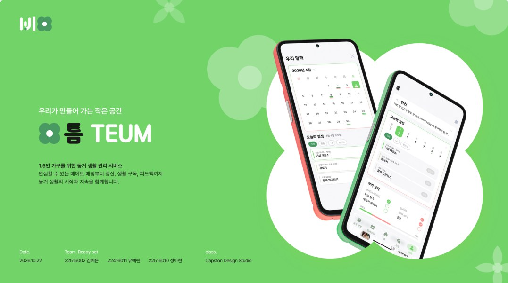

← 전체 프로젝트
틈| TEUM
1.5가구 동거 매칭·생활 관리 앱
안심할 수 있는 메이트 매칭부터 정산, 생활 구독, 피드백까지 — 동거 생활의 시작과 지속을 함께하는 서비스입니다.

Why믿을 동거인을 찾기 어려움
Decide인증 3종으로 불안 해소
Validate테스트 3회로 화면 개선
01Why · 문제의 원인
함께 살 사람은 필요하지만,
함께 살 사람은 필요하지만,
믿을 수 있는 동거인을 찾기가 어렵습니다.
혼자 살면서도 생활의 일부를 나누고 싶은 1.5가구에게 동거는 현실적인 선택지입니다. 하지만 상대를 확인할 방법이 부족해, 동거를 시작하기 전 단계에서 불안이 가장 크게 작용합니다.
📝 채워 주세요 — 리서치 방법(설문/인터뷰 대상·인원), 핵심 인사이트 2–3개, 페르소나 요약
설문·인터뷰 결과
페르소나 / 문제 정의
02Decide · 방향
인증 3종으로
인증 3종으로
매칭 전의 불안부터 해소하기로 했습니다.
신뢰를 쌓는 장치를 매칭 흐름 앞단에 두고, 매칭 이후에는 정산·생활 구독·피드백으로 동거 생활이 이어지도록 서비스 범위를 설계했습니다.
📝 채워 주세요 — 인증 3종이 각각 무엇인지, 다른 대안과 비교해 이 방향을 고른 근거, IA/유저 플로우
인증 3종 구조
유저 플로우 / IA
주요 화면 설계
03Validate · 검증
사용성 테스트 3회로
사용성 테스트 3회로
화면을 다듬었습니다.
3회사용성 테스트 반복
3종신뢰 인증 장치
📝 채워 주세요 — 회차별 참여자 수·과업, 발견한 문제, 개선 전/후 화면과 지표 변화
1차 → 2차 개선 (Before / After)
2차 → 3차 개선 (Before / After)
04Retrospect · 회고
배운 것과 다음 개선
📝 채워 주세요 — 프로젝트를 통해 배운 점, 다음에 검증하고 싶은 가설
NEXT PROJECT